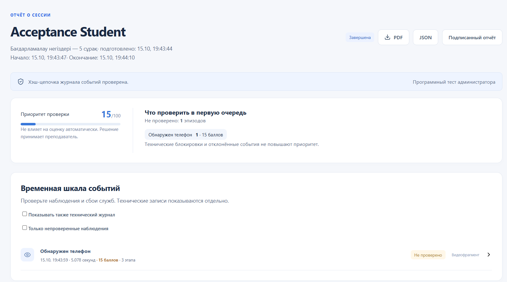

Sergек
01
QOSTANAI AI INDUSTRY HACKATHON 2026
Sergек
Локальный прокторинг
для экзаменов Moodle
Защищённая среда. Понятные доказательства.
Astana IT University
Риски во время экзамена
Sergек
02
01
Телефон и подсказки
Камера фиксирует предмет и длительность эпизода
02
Помощь или замена студента
Сравнение с фото и проверка числа людей в кадре
03
Выход из рабочей среды
Защита окон, клавиш, USB и удалённого управления
Цель КРУ: проверяемые условия сдачи в привычном Moodle
Защита на компьютере студента
Sergек
03
Moodle
Свой аккаунт
и выбранный тест
Начало по Start attempt
Локальный AI
Телефон и лицо
Направление взгляда
Голос и устойчивый шум
Windows
Приложения и окна
Клавиши и USB
Удалённое управление
Одна сессия связывает тест, устройство и доказательства
YOLO / ONNX Runtime / MediaPipe / SFace / Silero VAD
Sergек
04
Один эпизод. Понятный приоритет
Sergек
05
Телефон
| Сразу | 2 сек | 5 сек | 10 сек |
|---|---|---|---|
| 5 | 10 | 15 | 20 |
Ступени показывают общий балл эпизода
Взгляд в сторону
5 / 10 / 20 сек: 3 / 5 / 10 баллов
Второй человек
До 3 сек: 0
От 3 сек: 2 балла
Преподаватель видит важное первым
Sergек
06

Очередь по приоритету
Время и история эпизода
Камера, экран и звук
Решение преподавателя
Блокировки отдельно
в техническом журнале
AES-GCM: шифрование записей. Хэши и подпись: проверка целостности.
Выбор для компьютерной аудитории КРУ
Sergек
07
| Решение | Основной фокус |
|---|---|
| Safe Exam Browser | Защищённый экзаменационный браузер |
| OES | Готовая платформа прокторинга и отчётов |
| Sergек | Локальный AI, собственный хаб и открытый код |
Наш акцент: немедленное предупреждение
и объяснимая очередь проверки по длительности
Интерфейс: қазақша / русский / English
Проверки с воспроизводимым результатом
Sergек
08
249
тестов серверной логики
17
сценариев интерфейса
5
вопросов в полном
цикле Moodle
HTTPS-хаб: 100 синтетических сессий
100 завершены. Ошибок запросов и целостности: 0
Автоматические проверки и программный стенд / 15.10.2026
Подключение к существующему Moodle
Sergек
09
01
Хаб вуза
HTTPS и роли доступа
02
Плагин Moodle
Защита выбранного теста
03
Агент Windows
Подготовленные компьютеры
Предлагаем пилот
30 мест / 2 экзамена
Измеряем завершение попыток, время проверки и качество сигналов
Sergек
10
Sergек
Предупреждает сразу.
Сохраняет контекст.
Готовы к пилоту с КРУ
Astana IT University
Бердібек Мейірбек / Алхамқайыр Бекзат / Сабыр Аслан
+7 775 747 86 01 / berdibekmejirbek08@gmail.com